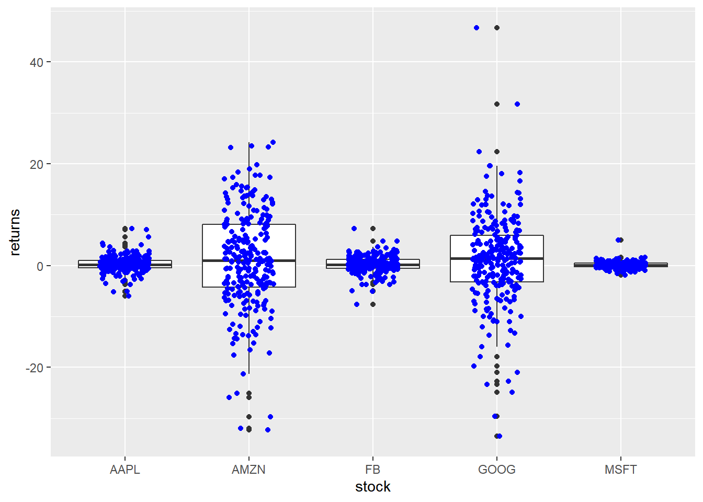
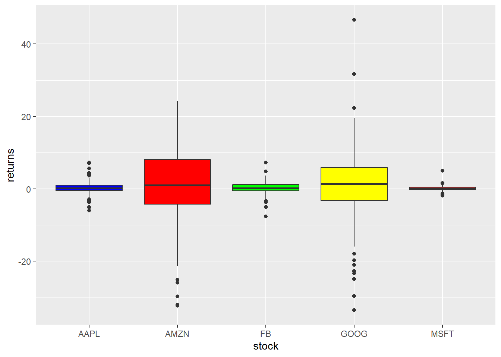
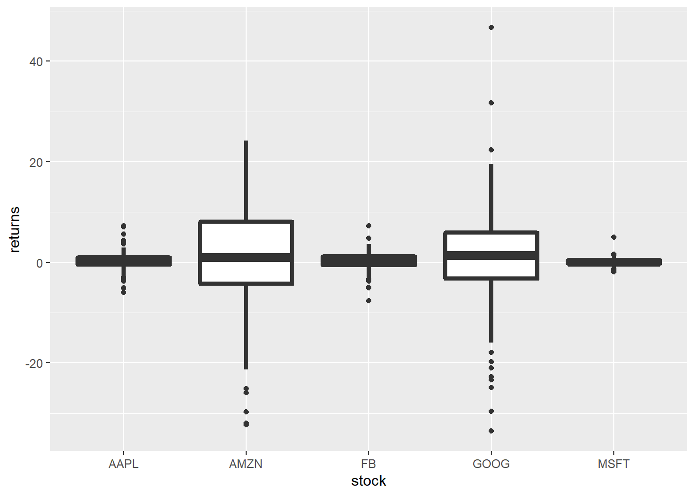
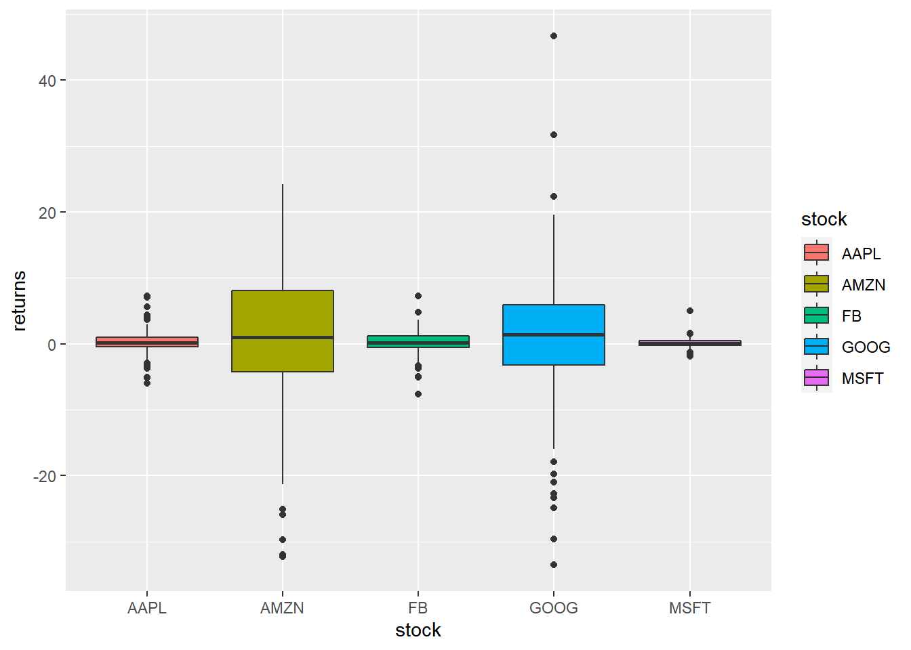
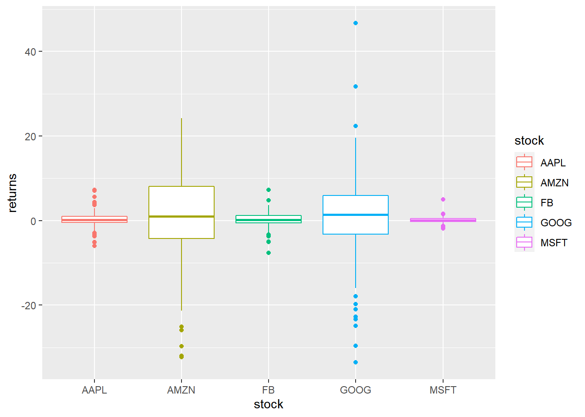

Chapter 9 Box Plots
9.1 Introduction
In this chapter, we will learn to:
- build box plots
- modify box
- color
- fill
- alpha
- line size
- line type
- modify outlier
- color
- shape
- size
- alpha
The box plot is a standardized way of displaying the distribution of data. It is useful for detecting outliers and for comparing distributions and shows the shape, central tendancy and variability of the data.
9.2 Structure
- the body of the boxplot consists of a “box” (hence, the name), which goes from the first quartile (Q1) to the third quartile (Q3)
- within the box, a vertical line is drawn at the Q2, the median of the data set
- two horizontal lines, called whiskers, extend from the front and back of the box
- the front whisker goes from Q1 to the smallest non-outlier in the data set, and the back whisker goes from Q3 to the largest non-outlier
- if the data set includes one or more outliers, they are plotted separately as points on the chart
9.3 Data
We are going to use two different data sets in this chapter. Both the data sets have the same data but are in different formats.
daily_returns <- readr::read_csv('https://raw.githubusercontent.com/rsquaredacademy/datasets/master/tickers.csv')
daily_returns## # A tibble: 250 x 5
## AAPL AMZN FB GOOG MSFT
## <dbl> <dbl> <dbl> <dbl> <dbl>
## 1 1.38 24.2 2.12 22.4 1.12
## 2 2.83 3.25 -0.860 5.99 0.767
## 3 -0.0394 9.91 1.45 6.75 0.973
## 4 0.108 3.76 -0.770 -10.7 -0.285
## 5 1.64 19.8 4.75 8.66 0.501
## 6 0.0689 5.33 -0.300 -0.930 0.256
## 7 -0.561 -5.21 -0.630 -7.28 -0.708
## 8 0.551 0.25 -0.460 0.690 0.128
## 9 -0.217 -13.6 0.0300 6.56 0.0786
## 10 -0.108 -4.25 0.460 2.60 0.472
## # ... with 240 more rows9.4 Single Plot
If you are not comparing the distribution of continuous data, you can create
box plot for a single variable. Unlike plot(), where we could just use
1 input, in ggplot2, we must specify a value for the X axis and it must be
categorical data. Since we are not comparing distributions, we will use 1
as the value for the X axis and wrap it inside factor() to treat it as a
categorical variable. In the below example, we examine the distribution of
stock returns of Apple.
9.5 Compare Distributions
9.5.1 Data
For the rest of the chapter, we will use the below data set. Instead of 5 columns, we have two columns. One for the stock names and another for returns.
tidy_returns <-
read_csv('https://raw.githubusercontent.com/rsquaredacademy/datasets/master/tidy_tickers.csv',
col_types = list(col_factor(levels = c('AAPL', 'AMZN', 'FB', 'GOOG', 'MSFT')), col_double()))
tidy_returns## # A tibble: 1,254 x 2
## stock returns
## <fct> <dbl>
## 1 AAPL 1.38
## 2 AAPL 2.83
## 3 AAPL -0.0394
## 4 AAPL 0.108
## 5 AAPL 1.64
## 6 AAPL 0.0689
## 7 AAPL -0.561
## 8 AAPL 0.551
## 9 AAPL -0.217
## 10 AAPL -0.108
## # ... with 1,244 more rowsWith the above data, let us create a box plot where we compate the distribution
of stock returns of different companies. We map X axis to the column with stock
names and Y axis to the column with stock returns. Note that, the column names
are wrapped inside aes().
To create a horizontal bar plot, we can use coord_flip() which will flip the
coordinate axes.
9.6 Horizontal Box Plot
9.6.1 Notch
Notches are used to compare medians. You can use the notch argument and set
it to TRUE.
9.6.2 Jitter
Just for comparison, let us plot the returns as points on top of the box plot
using geom_jitter(). We modify the color of the points using the color
argument and the spread using the width argument.
ggplot(tidy_returns, aes(x = stock, y = returns)) +
geom_boxplot() +
geom_jitter(width = 0.2, color = 'blue')
9.7 Outliers
To highlight extreme observations, we can modify the appearance of outliers using the following:
- color
- shape
- size
- alpha
To modify the color of the outliers, use the outlier.color argument. The
color can be specified either using its name or the associated hex code.
The shape of the outlier can be modified using the outlier.shape argument.
It can take values between 0 and 25.
The size of the outlier can be modified using the outlier.size argument. It
can take any value greater than 0.
You can play around with the transparency of the outlier using the
outlier.alpha argument. It can take values between 0 and 1.
9.8 Aesthetics
The appearance of the box can be controlled using the following:
- color
- fill
- alpha
- line type
- line width
9.8.1 Specify Values
The background color of the box can be modified using the fill argument. The
color can be specified either using its name or the associated hex code.
ggplot(tidy_returns) +
geom_boxplot(aes(x = stock, y = returns), fill = c('blue', 'red', 'green', 'yellow', 'brown')) 
To modify the transparency of the background color, use the alpha argument. It
can take any value between 0 and 1.
The color of the border can be modified using the color argument. The
color can be specified either using its name or the associated hex code.
ggplot(tidy_returns) +
geom_boxplot(aes(x = stock, y = returns), color = c('blue', 'red', 'green', 'yellow', 'brown')) The width of the border can be changed using the size argument. It can take
any value greater than 0.

To change the line type of the border, use the linetype argument. It can take
any value between 0 and 6.
9.9 Map Variables
Instead of specifying values, we can map fill and color to variables as
well. In the below example, we map fill to the variable stock. It assigns
different colors to the different stocks.

Let us map color to the variable stock. It will assign different colors
to the box borders.
